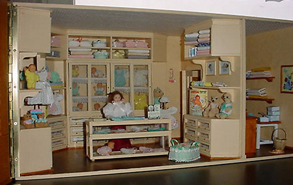
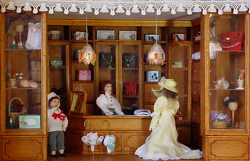
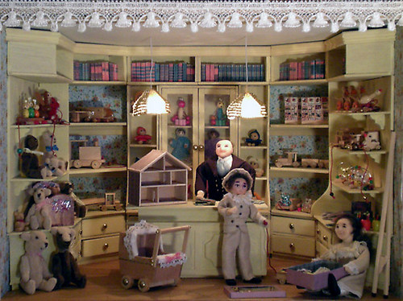
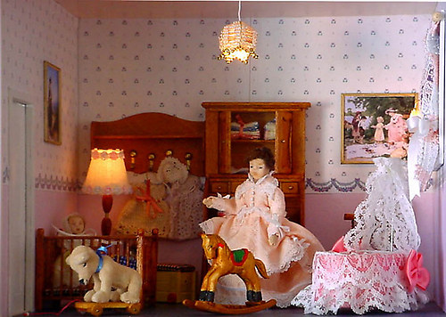
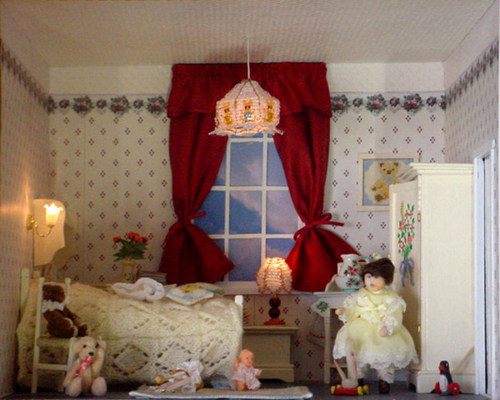
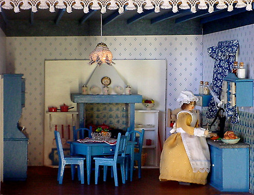

Al de kleertjes in de babywinkel heb ik gehaakt met haaknaald nr 0,5.
En een dubbele draad naaigaren, het was meer haken op gevoel !!


Hoedjes, parasolletjes, kettinkjes, het is hier allemaal te koop.

Auto's van tongspatels, beertjes van een lapje stof, al dit priegelwerk vind ik nou leuk!
Ik huurde in de bieb een boek over houten speelgoed maken.
De maten heb ik gedeeld door 12 en toen paste het mooi in mijn poppenhuiswinkel!

Victoriaanse babykamer..

En ook een kamer voor de grotere zus!

Keukentjes erg leuk om te maken!
De pannetjes en de glazen voorraad potjes heb ik gekocht!!
